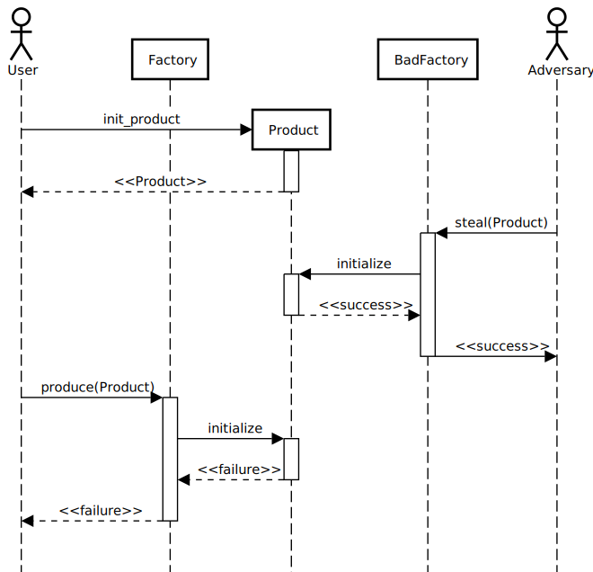
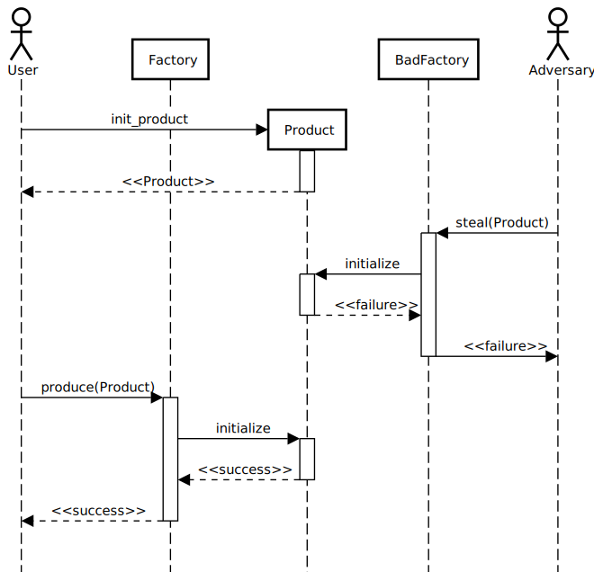
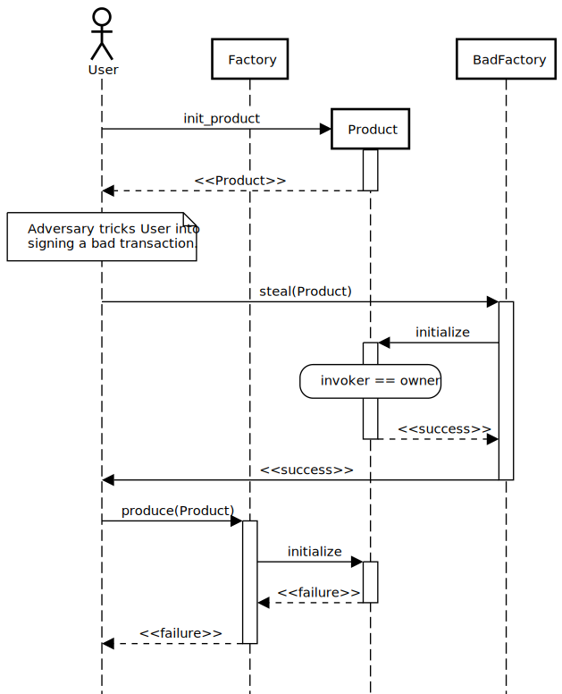

Factory pattern#
The factory pattern is a design pattern where one contract (the factory) creates instances of another contract (the products). This pattern makes sense on Ethereum, where deploying a smart contract typically means deploying the code and instantiating a contract in a single transaction. This means that creating a new instance of a smart contract typically means redeploying the code, even if it is identical to an already-deployed smart contract. This can be undesirable: redeploying the same code repeatedly wastes resources. The factory pattern provides a workaround for this: the contract code is deployed once, creating a factory contract, which then can be invoked to create further (product) contracts.
By contrast, on Concordium, deploying code and instantiating contracts are separate transactions. In particular, once the code has been deployed, any number of instances can be created without redeploying the code. This eliminates one of the key motivations for using a factory pattern.
Note
In object-oriented programming languages, the factory pattern is used to abstract over a constructor. For example, consider some code that needs to create a DatabaseConnection object. The code should work with both a MySqlDatabaseConnection and a SQLiteDatabaseConnection (which both implement or subclass DatabaseConnection), and perhaps also other database connections that have not even been defined yet. How should the code know which DatabaseConnection to create?
This is where the factory pattern comes in. In the case of the factory class pattern, the code is parametrized by a DatabaseConnectionFactory object, which provides a method for constructing DatabaseConnection objects. The DatabaseConnectionFactory interface would be implemented by MySqlDatabaseConnectionFactory and SQLiteDatabaseConnectionFactory (and potentially others). Which specific database connection is constructed depends on which factory is provided.
In the factory method pattern, the code resides in an base class that has an abstract method for constructing DatabaseConnection objects. The base class is then subclassed to provide different implementation of the factory method.
The point of this is that in object-oriented languages, the factory pattern is solving a particular problem: creating instances of a type that is not fully determined. While it may be idiomatic in one language, it may not be in another. For instance, in Rust the same code could be parametrized by a generic type that implements a DatabaseConnection trait, which provides a new function for constructing DatabaseConnection instances. The particular type of database connection that is created would depend on how the generic type parameter is eventually instantiated.
On Concordium, the same problem does not really exist (viewing contract instances as the analogue of objects). Contract instances are always created by top-level transactions, and the contract being instantiated is always explicitly determined.
Another motiviation for using a factory pattern might be for the factory to have some on-going relationship with the products that it produces. In particular, the factory could maintain an index of product instances, or ensure that each instance is created distinctly from the others. It could also play a role in logging events signalling the creation of new products.
The sequence diagram below illustrates an idealized factory pattern.
The user invokes the produce endpoint on a Factory contract.
The factory constructs a new instance of the product smart contract, invoking the
init_product constructor.
Finally, a reference to the new product instance is returned.
Unfortunately, implementing a factory pattern on Concordium is complicated by the fact that one smart contract instance cannot create other smart contract instances programmatically. On Concordium, every smart contract instance is created by a top-level transaction. To achieve something resembling the factory pattern, the product instances must first be created in an uninitialized state, and then the factory must be invoked to initialize them in a separate step.
The sequence diagram below illustrates how the factory pattern is realized on Concordium.
First, the user constructs a new instance of the product smart contract, invoking the
init_product constructor.
This creates the Product contract in a special uninitialized state.
The user then invokes the produce endpoint on the Factory contract, passing in a reference
to the Product contract.
The Factory contract in turn calls initialize on the Product contract, resulting in
the Product being fully initialized.
This process is significantly more complex than the original idealized factory pattern.
In particular, the user is required to sign two separate transactions, with the second one depending
on the result of the first one. If this two-step process is presented to the end user, it is likely
to cause confusion. Additionally, two-step process means that the smart contracts have to be robust
against misuse. For instance, the factory has to deal with the possibility that produce is
called with a reference to the wrong type of product contract.
Alternatives to the factory pattern#
Since there are a number of disadvantages to using the factory pattern on Concordium, it is important to consider whether a better alternative is available. One of the following alternatives may be suitable, depending on the application.
Construct the product directly#
If the factory does not maintain an on-going relationship with the product,
then it is generally possible to simply initialize the product entirely in
the constructor (init_product), removing the separate initialize operation entirely.
In general, if the factory contract does not need to update its state
when initializing the product, then it serves no purpose. It would be
sufficient for the user to construct the product directly in the same way as the factory
would have.
Register the instance with a contract registry#
A factory contract may serve as a registry of its products. The factory pattern enables this, as the factory is responsible for initializing each product instance. However, the factory pattern is not in itself necessary for a contract registry. Instead, instances could be constructed directly (as discussed above) and subsequently registered with a registry contract, which maintains an index of the instances registered with it. The registration process could also provide additional initialization information for the contract being registered (such as the index it is assigned by the registry).
Use a monolithic contract#
Instead of having separate contract instances for the factory and each product, all of these could be combined in a single monolithic contract. In this model, each product is assigned a virtual address, and the contract maintains a mapping from virtual addresses to the state of each product.
For instance, a CIS2 contract can manage multiple NFTs that each have distinct token IDs. Rather than each NFT being its own contract instance (created by a factory), they are simply handled as part of the state of the overall CIS2 contract. Here, the token ID acts as a virtual address.
The main disadvantage of this approach is that the isolation between the states of each product must be enforced by the contract itself. If the state becomes corrupted (due to a bug in the contract) then all of the encapsulated products can potentially be affected. With the factory pattern, the runtime system of the blockchain enforces isolation. As always, the balance of risks should be considered when choosing the approach for any application.
Implementing the factory pattern#
The guide below is based on the factory contract example, taking illustrative code snippets. Please refer to the example for the full context of these snippets.
The factory contract#
For the purposes of this example, the factory contract assigns each new product a unique (sequential) index. It also retains a map of all of the products that it has previously produced. The state of the factory contract is represented by the following Rust struct:
pub struct FactoryState<S: HasStateApi = StateApi> {
/// The index that will be assigned to the next product contract.
next_product: u64,
/// Index of the product smart contract instances.
products: StateMap<u64, ContractAddress, S>,
}
The produce endpoint#
The produce method of the factory expects one parameter that is the address of an uninitialized
instance of the product contract. First, the parameter is read from the context:
let product_address = ctx.parameter_cursor().get()?;
The factory needs to be sure that the address actually refers to an instance of the product
contract, in order to ensure correct behavior. This can be achieved by checking the module reference
and contract name against expected values. Together, the module reference and contract name uniquely
identify the code of the smart contract instance.
Getting the module reference and contract name is done using the host functions
contract_module_reference and contract_name, respectively. Note: both of these functions
are introduced in protocol version 7, and will not work while the chain is running an earlier
protocol version.
In this example, the factory and product contracts are defined in the same module. Thus, to check that the module reference of the product is correct, it is sufficient to check that it is the same as the module reference of the factory, as follows:
// We can depend upon getting the module reference for our own contract.
let self_module_ref = host.contract_module_reference(ctx.self_address()).unwrap();
// Check the product module is the same as our own module.
let product_module_ref = host
.contract_module_reference(product_address)
.or(Err(FactoryError::NonExistentProduct))?;
ensure_eq!(self_module_ref, product_module_ref, FactoryError::InvalidProduct);
If the product were instead defined in a different module from the factory, then the expected
module reference for the product could be hard-coded into the factory. Alternatively, if the
module rereference for the product is to be determined later, it could be passed as a parameter
when creating the factory instance.
If the module defining the product is known to only contain one smart contract, then checking the module reference is sufficient for identifying the code of the product smart contract. In the example smart contract, however, both the factory and product contracts are defined in the same module, so it is also necessary to check the contract name. This is achieved as follows:
let product_name =
host.contract_name(product_address).or(Err(FactoryError::NonExistentProduct))?;
ensure_eq!(product_name, PRODUCT_INIT_NAME, FactoryError::InvalidProduct);
Now the contract is known to be an instance of product, the next step is to update the state of
the factory contract:
let state = host.state_mut();
let next_product = state.next_product;
state.next_product = next_product + 1;
state.products.insert(next_product, product_address);
Finally, it remains to invoke initialize on the product.
In this example, initialize takes a parameter that is the index assigned to
it, which will be the old value of next_product in the state.
host.invoke_contract(
&product_address,
&next_product,
EntrypointName::new_unchecked(PRODUCT_INITIALIZE_ENTRYPOINT),
Amount::zero(),
)
.or(Err(FactoryError::InitializeFailed))?;
Here, it is assumed that initialize will fail, for instance, if it is called on a product that
has previously been initialized.
The product contract#
In this example, the product contract tracks the address of the factory that produced it and
the index assigned to it when it was produced. This is represented by the following struct:
pub struct Product {
/// The factory that created the product.
pub factory: ContractAddress,
/// The index given to the product by the factory.
pub index: u64,
}
Note, however, that this state information does not exist when the product is first created as uninitialized. The full state of the product is thus represented as follows:
pub enum ProductState {
/// The product has not yet been initialized by the factory.
Uninitialized,
/// The product has been initialised by the factory.
Initialized(Product),
}
The init function for the product will simply create a new product in the Uninitialized
state:
#[init(contract = "product")]
pub fn init(_ctx: &InitContext, _state_builder: &mut StateBuilder) -> InitResult<ProductState> {
Ok(ProductState::Uninitialized)
}
The initialize endpoint#
The initialize method of the product first checks that the product has not already been
initialized:
let state = host.state_mut();
ensure_eq!(*state, ProductState::Uninitialized, ProductError::AlreadyInitialized);
Since the construction and initialization of the product occur in two separate transactions, it is possible that a third party might try to hijack the process by inserting their own transaction to initialize the product. For instance, an adversary could invoke a different factory instance than intended by the user, as illustrated in the following sequence diagram:
To prevent this possibility, the product checks in its initialize method that the invoker of the
transaction (i.e., the account that originated the transaction as a whole) is the same account as
created the product contract instance (i.e., the “owner”):
ensure_eq!(ctx.invoker(), ctx.owner(), ProductError::NotAuthorized);
With this check, the attack described above would result in failure for Adversary (because the invoker Adversary does not match the owner User), but success for User:
Note
Typically, it is wrong to use the invoker of a transaction for authorization, rather than the immediate caller. For instance, a user might invoke some untrusted smart contract, and expect it is not authorized to transfer tokens they hold on another contract. If the token-holding contract used the invoker for authorization, then the untrusted contract could transfer the tokens. In the case of the factory pattern, however, the authorization is for a one-time use (initializing the product contract) and should occur immediately after the product is created. An adversary would have to convince a user to sign a malicious transaction in between the construction and (intended) initialization transactions in order to hijack the product contract, as shown in the following sequence diagram:
Hopefully, this is unlikely. Moreover, the effect of such a hijacking should typically be that the product cannot be used as the user intended, but the user would still be able to create another product and have the factory produce that correctly.
At this point, it just remains to initialize the state of the product:
// The index is supplied as a parameter by the factory.
let index: u64 = ctx.parameter_cursor().get()?;
// This endpoint should only be called by another smart contract, namely the
// factory, which we record in the state.
let factory = match ctx.sender() {
Address::Contract(ca) => ca,
_ => Err(ProductError::SenderIsAccountAddress)?,
};
// Initialize the state.
let product = Product {
index,
factory,
};
*state = ProductState::Initialized(product);
Note
If a user invokes initialize directly (rather than through a factory contract) it will fail.
This is because initialize checks that the immediate caller is a smart contract, and
records the contract address in the state. The fact that this prevents a user from directly
invoking initialize is incidental. The design intent is not to prevent the user from
initializing products badly (which they could also do by invoking a “BadFactory” as previously
noted). The intent is that products that are produced by the factory are produced correctly.
Security considerations#
The security model for the factory pattern presented here relies on the fact that none of the initialization of
the product occurs in the constructor of the product (the init method),
but instead is handled by the initialize endpoint that is called by the
factory. In particular, if any funds or authorization are granted to the
product before initialize is called, then the consequences and risk of
hijacking are more sever. Thus, to adhere to the factory pattern, the
product contract must:
Always be constructed in an uninitialized state, with no balance, authority, or any other state.
Only permit the
initializeupdate operation while it is in the uninitialized state.On a successful call of
initialize, transition from the uninitialized state to an initialized state.Never transition back to the uninitialized state.
It is important to always consider the risks presented by malicious third parties and to evaluate if any given solution is appropriate to the application at hand.